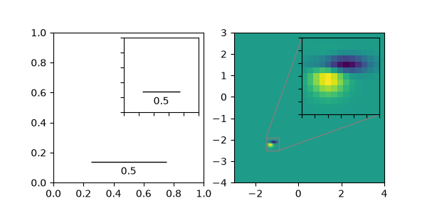

Note
Go to the end to download the full example code.
Inset locator demo 2#
This demo shows how to create a zoomed inset via zoomed_inset_axes.
In the first subplot an AnchoredSizeBar shows the zoom effect.
In the second subplot a connection to the region of interest is
created via mark_inset.
A version of the second subplot, not using the toolkit, is available in Zoom region inset Axes.

import matplotlib.pyplot as plt
import numpy as np
from matplotlib import cbook
from mpl_toolkits.axes_grid1.anchored_artists import AnchoredSizeBar
from mpl_toolkits.axes_grid1.inset_locator import mark_inset, zoomed_inset_axes
fig, (ax, ax2) = plt.subplots(ncols=2, figsize=[6, 3])
# First subplot, showing an inset with a size bar.
ax.set_aspect(1)
axins = zoomed_inset_axes(ax, zoom=0.5, loc='upper right')
# fix the number of ticks on the inset Axes
axins.yaxis.get_major_locator().set_params(nbins=7)
axins.xaxis.get_major_locator().set_params(nbins=7)
axins.tick_params(labelleft=False, labelbottom=False)
def add_sizebar(ax, size):
asb = AnchoredSizeBar(ax.transData,
size,
str(size),
loc="lower center",
pad=0.1, borderpad=0.5, sep=5,
frameon=False)
ax.add_artist(asb)
add_sizebar(ax, 0.5)
add_sizebar(axins, 0.5)
# Second subplot, showing an image with an inset zoom and a marked inset
Z = cbook.get_sample_data("axes_grid/bivariate_normal.npy") # 15x15 array
extent = (-3, 4, -4, 3)
Z2 = np.zeros((150, 150))
ny, nx = Z.shape
Z2[30:30+ny, 30:30+nx] = Z
ax2.imshow(Z2, extent=extent, origin="lower")
axins2 = zoomed_inset_axes(ax2, zoom=6, loc="upper right")
axins2.imshow(Z2, extent=extent, origin="lower")
# subregion of the original image
x1, x2, y1, y2 = -1.5, -0.9, -2.5, -1.9
axins2.set_xlim(x1, x2)
axins2.set_ylim(y1, y2)
# fix the number of ticks on the inset Axes
axins2.yaxis.get_major_locator().set_params(nbins=7)
axins2.xaxis.get_major_locator().set_params(nbins=7)
axins2.tick_params(labelleft=False, labelbottom=False)
# draw a bbox of the region of the inset Axes in the parent Axes and
# connecting lines between the bbox and the inset Axes area
mark_inset(ax2, axins2, loc1=2, loc2=4, fc="none", ec="0.5")
plt.show()